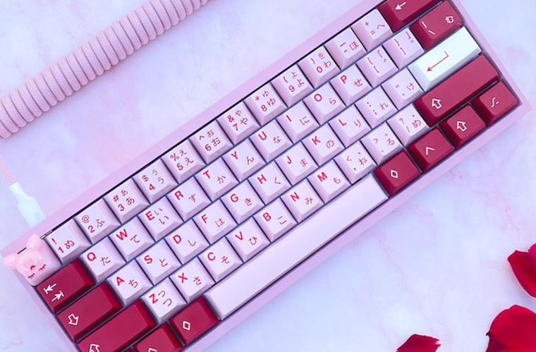

¡No te pierdas nuestro último video!
El IF98 es un teclado mecánico con hot-swapp con emocionantes esquemas de color e interruptores Gateron. Diseñado para una alta productividad en un tamaño compacto, el diseño IF98 1800 posee 98 teclas, con una sección desmontable sobre el NumPad. Puedes elegir entre tres tonos para los colores: blanco vintage, negro y verde. Los interruptores amarillos, azules, marrones, negros y rojos de Gateron están disponibles.
¡Más reseñas!
94 or 98 Keys | YUNZII Keynovo IF98
El IF98 es un teclado mecánico con hot-swapp con emocionantes esquemas de color e interruptores Gateron.
AM AFA (Adjustable Flex Alice)
Inspirado en Macross VF-19. Macross, uno de los animes mecha favoritos de nuestro equipo, sirvió de inspiración para AM AFA. La ligereza, la flexibilidad y las alas de barrido hacia adelante de aspecto fresco hacen del YF-19 y del posterior caza VF-19 diseñado por Masaharu Kawamori una impresionante pieza de kit.
Zoom TKL Essential Edition Build
Un nuevo estándar para teclados personalizados de nivel básico. Este teclado a un precio accesible desafía lo que debe esperar de un teclado mecánico personalizado de "nivel de entrada”.